Describe the learners actually assessed. The summary answers how many, how common or how widely spread. An inferential test is unnecessary when that is the entire question.
Start with the decision the table will support. A reading coordinator assigning support needs the number below benchmark because each of those learners needs a place. A coordinator comparing baseline coverage across differently sized groups also needs percentages. Presenting the count beside its percentage lets either reader recover what the summary means.
Keep the measurement scale visible. A learner who answers 12 of 20 items correctly scores 60% on that assessment. A class in which 60% meet a benchmark describes a different quantity. Both figures can appear in one report if their headings identify exactly what was counted.
Data needed
One row per learner, a category or numeric score, a defined denominator and an explicit missing-value code.
When another treatment fits
Use the median and the middle 50% of scores (quartiles) for strongly skewed values. A mean and standard deviation can summarize roughly symmetric scores.
Assumptions
Who counts as one case?
One learner should contribute once to a learner-level percentage. Attendance entries and quiz attempts measure different units.
How to check. Check whether the same ID appears on several rows, especially after merging section lists.
If the condition is weak. Define whether the question concerns learners or attempts. For learners, select the intended assessment per ID using a documented rule.
Who could be assessed?
A proficiency percentage depends on who completed the assessment and who was eligible.
How to check. Reconcile the assessment sheet with enrollment for that date. Distinguish an absence, an exemption and an observed zero.
If the condition is weak. Report assessment coverage separately. If absences cluster in one section, describe that limitation before comparing sections.
What do labels mean?
A category requires a consistent definition. Labels such as developing and proficient express an order, while adjacent categories may span different score ranges.
How to check. Check the cutoffs against the scoring guide and inspect observations exactly at each boundary.
If the condition is weak. Correct inconsistent coding before tabulating. For categories, show counts and percentages. An average of category codes is difficult to interpret.
What is a typical score?
A mean uses every score’s magnitude and can shift sharply with extremes. A median describes the middle ranked observation.
How to check. List or plot scores in order. Look for a long tail, an impossible value or a pile-up at the maximum.
If the condition is weak. Confirm suspected errors against the record. If genuine extremes affect the mean, include median and quartiles and explain what the plot shows.
Interpreting Results
Worked school example
A class has 34 enrolled learners. Of the 32 assessed, 8 met the benchmark and 24 scored below it. Two were absent. Report 8/32 (25%) meeting the benchmark and 32/34 assessed (94.1%).
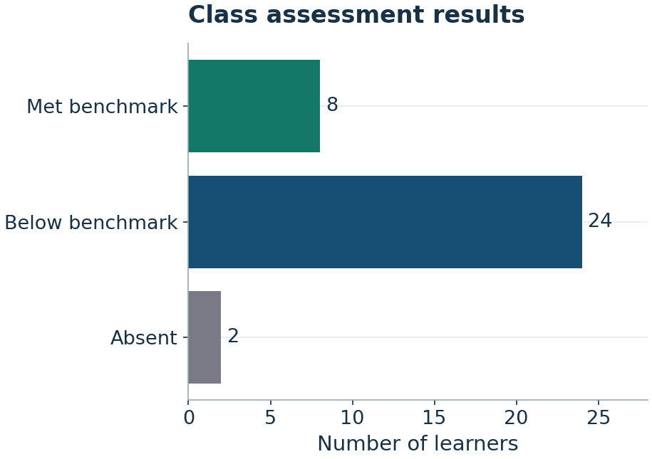
Of 34 enrolled learners, 8 met the benchmark, 24 scored below it and 2 were absent. The achievement denominator is 32 assessed learners.
Reading the result
A principal could write, “At baseline, 8 of the 32 assessed learners met the reading benchmark (25%). Of the 34 enrolled, two still needed assessment.” This distinguishes support decisions for assessed learners from the follow-up needed for absentees.
To aggregate sections, add their numerators and assessed denominators before dividing. An unweighted average gives a small section the same influence as a large one. For a complete school register, report the observed values directly. Sampling uncertainty becomes relevant when the claim extends beyond those records.
What to report
Give the numerator, denominator, missing count and assessment date. For numeric data, include the unit and a measure of spread.
Calling 8/34 the proficiency rate silently treats the two missing assessments as observed failures.
Estimate mean change in the original score units by taking one difference per learner. The reference value is usually zero mean change.
Learners serve as their own references. Moving from 10 to 13 and moving from 15 to 18 both represent three-point gains. Pairing removes differences in starting level from the calculation of each gain. Variation among those gains determines how precisely the mean gain is estimated.
Methodological sources (Laerd Statistics, n.d.; National Institute of Standards and Technology, n.d.).
When to Use It
Did the same learners’ scores change?
A common mistake is to compare two class means calculated from everyone present on each day. Losing the weakest or strongest learners at follow-up can change the mean even when nobody improves. An ID match establishes whose change the estimate describes. It leaves a separate question about whether those who missed follow-up would have changed differently.
Data needed
Learner ID and two comparable numeric scores in the same row. Count learners missing either score.
When another treatment fits
For a question about a typical shift, consider Wilcoxon signed-rank when differences are roughly symmetric. A sign test can address direction when only increase or decrease is meaningful.
Assumptions
Matched individuals
Each difference must connect two scores from the same learner. Matching by row order can silently connect different people.
How to check. Temporarily sort the two sheets in different orders. Check that the ID-based join still returns the same pairs and inspect IDs found only once.
If the condition is weak. Resolve duplicated or ambiguous IDs. Retain a record of unmatched cases and state how many pairs enter the analysis.
Comparable points
Subtracting scores is meaningful when the unit and interpretation are similar on both occasions.
How to check. Compare item coverage, item counts, scoring rules and administration conditions. Equally long tests can differ substantially in difficulty.
If the condition is weak. Use equivalent forms or a defensible common metric. If forms assess different constructs, present their outcomes separately.
Independent pairs
The uncertainty calculation treats each learner’s change as independent of another learner’s change.
How to check. Check for team scores, delivery assigned by class, or rows containing repeated attempts.
If the condition is weak. Use the actual independent unit. Class-level delivery or multiple observations per learner may require a clustered or repeated-measures analysis.
Distribution of changes
The small-sample t interval assumes approximately normal change scores free of highly influential observations.
How to check. Plot endline minus baseline for each learner and inspect its tails. Separate pretest and posttest histograms cannot diagnose the distribution of gains.
If the condition is weak. Verify exceptional gains. Report sensitivity to a genuine influential pair or choose a paired approach that matches the revised question.
Interpreting Results
Worked school example
Eight learners have changes of +2, +1, +3, 0, +3, +2, +1 and +4 points on equivalent reading forms. The average gain is 2.00 points (95% CI 0.91 to 3.09), t(7) = 4.32, p = .0035.
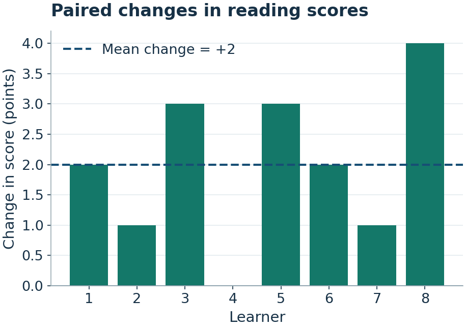
Posttest minus pretest, in points, for eight matched learners. Seven improved, one had zero change and the dashed line marks the mean gain of 2 points.
Reading the result
Example wording: “The eight learners with matched assessments gained an average of 2.00 points. The 95% confidence interval for mean gain was 0.91 to 3.09 points.” Include the scale maximum so a teacher can judge whether two points matters educationally.
The interval concerns average change under the model. Individual learners can show smaller changes, stability or a decline. If learners were selected because baseline scores were low, regression toward the mean is also plausible. A one-group comparison cannot separate that influence, repeated testing and ordinary development from an intervention effect.
What to report
Give the number of matched and unmatched records, mean change in points, 95% confidence interval and test result. A one-group design alone cannot attribute change to the program.
Separate baseline and endline class means can hide changes in who attended. In an uncontrolled study, improvement can also reflect practice or maturation.
Evaluate whether paired differences center around zero under a symmetric shift model. The direction and rank of each nonzero difference contribute.
Consider two paired classes of scores with identical counts of improving learners. In one class the declines are tiny, while in the other they are large. A direction-only analysis treats these classes alike. Signed ranks reflect the relative magnitude of each decline and increase, without requiring raw differences to follow a normal distribution.
Ranks preserve ordering but lose the original unit. For a teacher deciding whether fluency changed enough to matter, show observed changes in correct words per minute alongside the test. A p-value alone provides no estimate of what a learner gained.
Data needed
Matched pre/post measurements, a fixed subtraction direction and meaningful comparisons of the magnitudes of differences.
When another treatment fits
Use a paired sign test when only the direction of change is meaningful. Show how many learners improved, declined or stayed the same.
Assumptions
Meaningful matched differences
Scores must belong to a matched pair and the magnitude of one change must be comparable with another.
How to check. Read the unit aloud, for example additional correct words per minute. Check that changing the order of learners preserves each match.
If the condition is weak. If differences only indicate better, same or worse, use direction counts and consider a paired sign test.
Symmetry
For an interpretation as a typical location shift, paired differences should be roughly symmetric about their center. The null reference distribution relies on sign symmetry about zero.
How to check. Plot the differences, mark their median and compare the positive and negative tails. With few observations, consider what the measurement process permits.
If the condition is weak. A strong floor, ceiling or long one-sided tail calls for a different analysis or a description of gains and losses.
Independent pairs
Each learner should contribute one independently observed change. Multiple readings from one learner provide additional measurement, not additional independent participants.
How to check. Check IDs, retests, partner scores and group-level assistance. Verify whether readings were averaged before computing changes.
If the condition is weak. Keep the planned single pair per learner or use an analysis that accounts for multiple measurements or shared groups.
Zeros, ties and rounding
An unchanged score contributes no signed direction. Tied absolute changes carry equal information about magnitude.
How to check. Count zeros and ties before choosing a software option. Differences such as 0.99 and 1.00 may reflect rounding conventions.
If the condition is weak. Use measurement precision consistently and specify the zero rule. Select inference that handles the observed ties and zeros.
Interpreting Results
Worked school example
Changes in correct words per minute are +2, +3, +4, +6, −1, +5, +7 and −8. Positive ranks sum to 27 and negative ranks sum to 9. With no ties or zeros, the smaller sum is 9 and the two-sided exact p-value is .250.
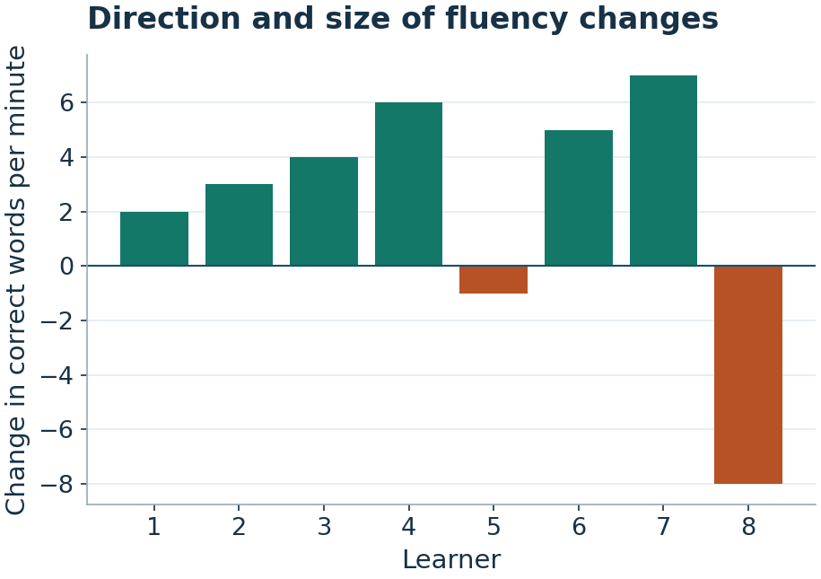
The paired changes, in correct words per minute, range from −8 to +7. Six gains and two declines contribute signed ranks according to their absolute sizes.
Reading the result
“Six of eight learners read faster at follow-up. Changes ranged from −8 to +7 correct words per minute. The two-sided signed-rank test gave W = 9, exact p = .250.” This communicates the apparent improvement and the countervailing magnitude of the largest decline.
Explain the evidence that would matter practically. If a program requires a sustained gain of five words per minute, a test centered on zero does not directly assess that standard. Display individual trajectories and choose the educationally meaningful comparison before looking at the p-value.
What to report
Show the distribution of paired changes, number of complete pairs, handling of ties, signed-rank statistic and p-value.
Six of eight learners improved, but the largest absolute change was a decline. A signed-rank test weighs that magnitude. The result leaves the direction of a population shift uncertain.
Estimate the difference between two group means while allowing their variances to differ. Set the group order so the sign of the difference is interpretable.
The question specifies whose score is subtracted. If format B is intended to improve performance, expressing the result as B minus A lets positive values consistently indicate higher scores in B. Prespecifying the comparison also avoids switching direction after seeing which average is larger.
Do two independent groups differ in average score?
The Welch procedure estimates uncertainty using each group’s own variation and sample size. A group with more variable results can contribute more uncertainty even when its mean is known exactly for the six pupils observed. Fractional degrees of freedom reflect this combination of variance estimates and are an expected feature of the output.
Data needed
A numeric outcome, a two-category group variable and one independent observation per learner.
When another treatment fits
If the question concerns the ordering of ordinal outcomes or a distributional difference, consider Mann–Whitney U. Class-level assignment needs an analysis that accounts for classes.
Assumptions
Two separate groups
A learner assigned to A cannot also contribute an observation to B under this model. Matching creates a different design.
How to check. Cross-check ID lists and determine whether groups were individually assigned, matched in pairs or selected from intact classes.
If the condition is weak. For paired records, preserve the pairing. If class and format coincide, describe class differences and explain the design limitation.
Numeric common metric
A difference in means should represent the same unit in both groups. A numeric label alone need not measure an amount.
How to check. Verify that both groups had the same rubric, scoring anchors, timing and assessment task or equivalent forms.
If the condition is weak. Calibrate raters or harmonize equivalent scales. For a single ordinal rating, examine the category distribution and consider a rank-based question.
Distribution within groups
Welch permits unequal variances, but a six-person group containing an extreme observation can still have an unstable mean.
How to check. Plot each group separately. Check extremes against the source sheet and ask whether a cap or floor restricts the distribution.
If the condition is weak. Correct recording errors. For valid extremes, show their impact transparently and consider robust methods if a mean is still the target.
Scope of inference
A test compares group means under a sampling or assignment model. It cannot remove pre-existing differences between nonrandom groups.
How to check. Review who chose each format, whether motivation influenced participation and whether exclusions differed by group.
If the condition is weak. Report an observational comparison when selection was not randomized. Describe baseline imbalances and limit claims to the design.
Interpreting Results
Worked school example
Format A scores are 12, 14, 13, 15, 16, 14. Format B scores are 15, 16, 17, 18, 20, 16. Average scores are 14 and 17. B minus A is 3.00 points (95% CI 0.91 to 5.09), t(9.49) = 3.22, p = .0098.
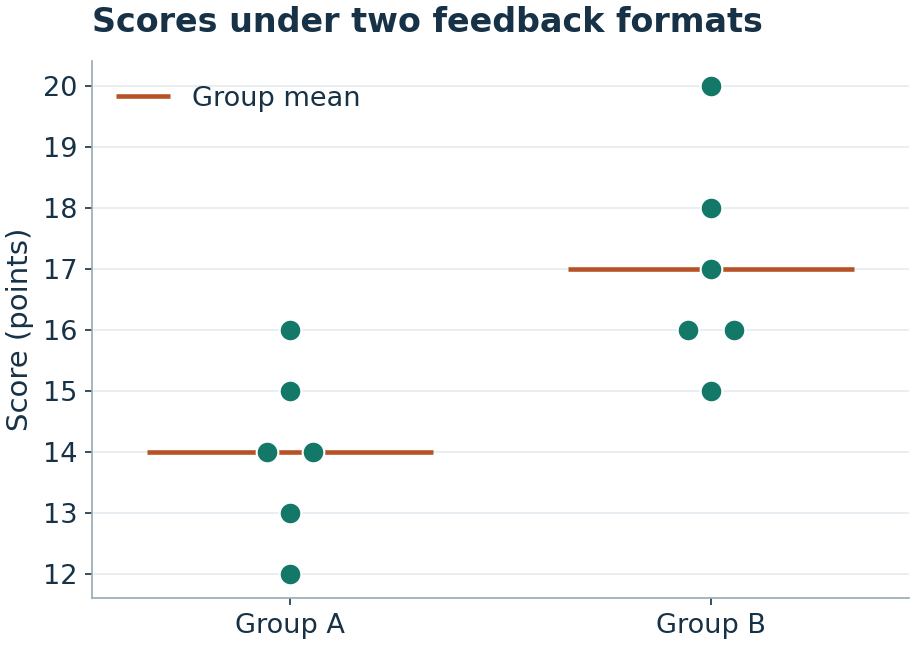
Each dot is one learner’s score in points. Group A averages 14 and B averages 17. The horizontal lines show means; overlapping scores illustrate variation within groups.
Reading the result
“Mean scores were 17.0 in format B and 14.0 in format A, six learners per group. B averaged 3.00 points higher (95% CI 0.91 to 5.09).” For a 20-point test this corresponds to a 15-percentage-point difference in mean percentage scores, conditional on the same denominator.
Use the interval in the instructional decision. A school requiring at least a two-point improvement should notice that plausible mean differences include values below two. Evidence that groups differ from zero and evidence that an improvement reaches a prespecified threshold answer different questions.
What to report
Report each group’s size, mean and standard deviation, the difference in means, 95% confidence interval, t, degrees of freedom and p-value.
A higher mean does not establish a format effect when learners chose their own groups. Consider baseline differences and how the groups were formed.
Welch, B. L. (1947). The generalization of “Student’s” problem when several different population variances are involved. Biometrika, 34(1–2), 28–35. https://doi.org/10.1093/biomet/34.1-2.28
Mann–Whitney U test
Overview
Compare the ordering of scores across two independent groups. Higher observations in one group tend to receive higher pooled ranks.
Imagine pairing each learner from group A with every learner from B. For each pairing, credit A with one if its score is higher and half if the two scores tie. Adding those credits gives U for A. This interpretation connects a rank statistic to actual responses on a five-category scale.
Do two independent groups tend to give different ratings?
This comparison leaves the outcome ordinal. It does not assume that the change from “unclear” to “somewhat clear” is the same size as the change from “clear” to “very clear.” Keep the response anchors in the results so the numerical ordering remains meaningful to teachers and learners.
Data needed
An ordered outcome, two groups with no overlapping participants and a consistent definition of higher scores.
When another treatment fits
If your question specifically concerns a difference in average numeric scores, consider Welch’s t-test. For paired ratings, use a paired method.
Assumptions
Ordered responses
Each level should have a clear order shared by both groups. The intervals between response options can be unknown.
How to check. Read every response anchor. Check for reversed scoring or a neutral answer accidentally treated as missing.
If the condition is weak. Align scoring direction before ranking. Use a categorical association test for unordered responses such as preferred activity names.
Independent groups
The test pools values across two separate groups of learners. A learner who rated both formats contributes dependent responses.
How to check. Inspect the roster for repeated IDs, matched pairs, shared team ratings or learners nested within a single class per condition.
If the condition is weak. Use a paired approach for repeated ratings. For intact classes, consider the assignment unit before drawing population conclusions.
Distribution shape
Ranking can reveal differences in how ratings from the two groups overlap. A simple location or median-shift interpretation needs comparably shaped distributions.
How to check. Display counts for each response level by group. Look for a group concentrated at both extremes or a group pressed against the ceiling.
If the condition is weak. If shapes differ substantially, describe how the distributions differ. Do not translate the test into an automatic claim about medians.
Ties and exchangeability
Short rating scales produce many identical responses. Exact permutation inference requires that group labels could be exchanged under the null model.
How to check. Count ties and inspect how group membership arose. Check which exact, asymptotic or permutation option the software actually uses.
If the condition is weak. Use a tie-aware approach consistent with the design. Document whether all allocations were enumerated or a random subset was sampled.
Interpreting Results
Worked school example
Clarity ratings in group A are 2, 2, 3, 3, 3, 4. Group B reports 3, 4, 4, 4, 5, 5. U for A is 4 out of 36 possible cross-group pairs. Across all 924 allocations of six learners per group, a two-sided permutation test gives p = .0368.
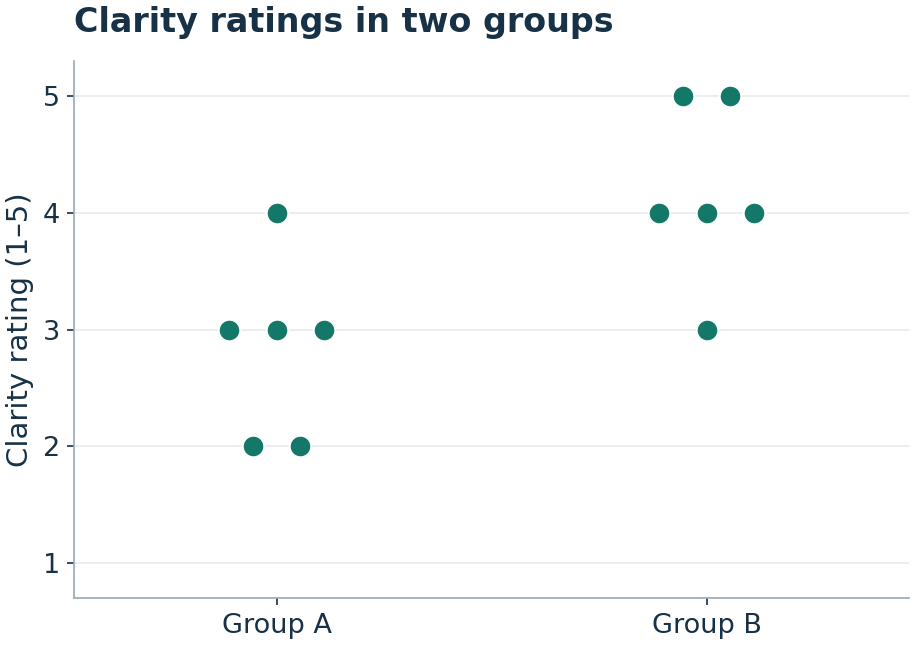
Each dot is one response on the five-point clarity scale. Most group A ratings are at 2 or 3, while most group B ratings are at 4 or 5. Dots at the same level show ties.
Reading the result
“Format B tended to receive higher clarity ratings. Five of six B learners selected 4 or 5, compared with one of six A learners. A two-sided permutation Mann–Whitney test gave U for A = 4, p = .0368.” Reporting the category contrast makes the ordering intelligible.
State whether labels were randomized or arose from existing groups. Even a large difference in sample ordering can reflect learning needs or previous exposure when formats were chosen. A single clarity item supports a conclusion about reported clarity and cannot establish greater mastery.
What to report
Show the response distribution by group, sample sizes, U and p-value. Interpret a median difference only when the group shapes support it.
A smaller U for A reflects its lower ratings. A median claim requires similar distribution shapes. Different software may display the complementary U for B.
Test whether a set of group means could all be equal. A significant omnibus result indicates evidence of at least one difference.
Three groups create three possible pairs, and running separate unadjusted tests increases the chance of flagging a difference by chance. The omnibus test first asks a single question about equality of all means. A planned contrast or multiplicity-adjusted set of follow-ups addresses the more specific instructional decision.
Methodological sources (Laerd Statistics, n.d.; National Institute of Standards and Technology, n.d.; Welch, 1951).
When to Use It
Do three or more independent groups differ in average score?
The logic of ordinary ANOVA is a comparison of variation. If group means are far apart relative to variation among classmates within the same format, the ratio F grows. Its magnitude depends on the sample sizes as well as dispersion, so readers still need the original means and differences in score points.
Data needed
A numeric score, a group label for each learner and several independent observations per group.
When another treatment fits
For ordered outcomes or a question about differences in ranks, consider Kruskal–Wallis. A follow-up comparison should match the selected test and account for multiple comparisons.
Assumptions
One factor with independent groups
Each learner contributes one score to one level of the factor, such as feedback format. Multiple ratings per learner or shared scores change the design.
How to check. Read the assignment procedure and inspect duplicate IDs. Determine whether formats were allocated to learners or entire classes.
If the condition is weak. Use a within-learner approach for repeated measures. With class-level allocation, account for the number of independent classes.
Comparable outcome
All group means must be in common, interpretable units. Different assessment conditions can create an apparent group difference.
How to check. Review score ranges, scoring rubrics, rater training and opportunity to complete the task across formats.
If the condition is weak. Resolve scoring discrepancies before comparing means and explain any administration differences that remain.
Within-group behavior
The standard small-sample F inference assumes approximately normal errors within groups. An extreme point can drive both mean and variance.
How to check. Plot the scores in each group and inspect deviations from its group mean. The pooled distribution can look irregular simply because the group means differ.
If the condition is weak. Confirm exceptional scores. If severe skew remains, consider a model appropriate to the outcome or a different question about ranks.
Equal variance for ordinary ANOVA
The ordinary F procedure pools within-group variation into a single variance estimate. Welch ANOVA allows different group variances.
How to check. Examine group standard deviations together with group sizes. Substantial spread differences matter especially when groups differ in size.
If the condition is weak. Use Welch when the common-variance assumption is implausible. Select compatible pairwise procedures, and specify them with the omnibus result.
Interpreting Results
Worked school example
Across three formats, six scores per format are A (12, 14, 13, 15, 16, 14), B (15, 16, 17, 18, 20, 16) and C (11, 12, 13, 12, 14, 10). Means are 14, 17 and 12. Ordinary ANOVA gives F(2, 15) = 15.83, p = .00020.
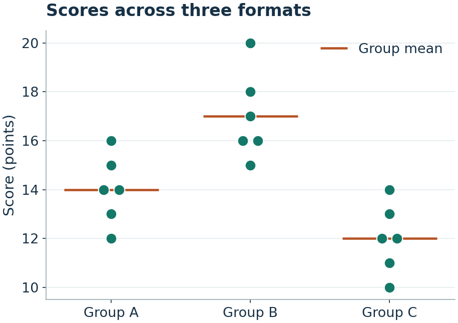
Each dot is one score in points. Orange lines mark group means of 14, 17 and 12. Differences between means are interpreted relative to the variation inside the three groups.
Reading the result
“Average scores differed across formats in the illustrative sample, F(2, 15) = 15.83, p < .001. Format B averaged five points above C, with a Tukey-adjusted 95% interval of 2.68 to 7.32 points.” Identify the six learners per format and the assessment scale.
A school choosing between A and C should read their own interval. The observed two-point difference is compatible with a small difference in the opposite direction. If group sizes, variances or missing scores change in the real project, rerun the appropriate analysis rather than transferring the illustrative comparisons into the report.
What to report
Report group sizes, means, standard deviations, F, degrees of freedom and p-value. Identify relevant pairwise differences with adjusted comparisons and intervals.
The omnibus p-value does not identify which pair differs. The observed five-point B–C difference is descriptive until its comparison and uncertainty are reported.
Compare how values are distributed across three or more independent groups using their pooled ranks.
Ranks allow difficulty or confidence ratings to be compared without assuming equal intervals between adjacent options. The ranking is performed across all groups together. Ranking separately within each group would give every equally sized group the same total and remove the evidence of a difference.
Do ratings differ across three or more independent groups?
An omnibus comparison is especially helpful when the teacher has three activities but no prespecified ordering of their expected ratings. If the substantive question names a particular pair, plan how that pair will be examined and how other comparisons will be handled. Looking for the two most separated samples first and then running one unadjusted test overstates the evidence.
Data needed
An ordinal or numeric outcome, one observation per participant and three or more group labels.
When another treatment fits
For means on a numeric scale, consider ANOVA or Welch ANOVA. For repeated ratings by the same learners, consider Friedman.
Assumptions
Independent units
The ranking procedure compares different participants across three or more groups. Each learner should provide one observation.
How to check. Match the group roster to respondent IDs and check whether the same learner tried all formats, or whether multiple pupils share a team score.
If the condition is weak. For related conditions use a repeated-measures approach such as Friedman. Account for clustered delivery if classes were assigned together.
Consistent ordering
The response scale must order values meaningfully in all groups. A high score should represent the same end of the continuum everywhere.
How to check. Compare response anchors and scoring direction. Confirm that a code of zero denotes a genuine response and is not an absence.
If the condition is weak. Recode reversed items and set missing responses aside. Show the original labels so the direction of a rank difference stays clear.
Distribution shapes
Differences in rank distributions can reflect shape or spread as well as location. A median-shift claim needs suitably similar shapes.
How to check. Compare group frequency tables or aligned dot plots. Look for bunching at the extremes or responses concentrated at one level.
If the condition is weak. Interpret the whole distribution when shapes differ and describe the actual categories responsible for the pattern.
Ties and small groups
A rating item with five choices almost guarantees ties. The usual chi-square approximation can be inaccurate with small groups and heavy ties.
How to check. Count observations per group, record the number of distinct ratings, and inspect whether the output states that the H statistic was tie-corrected.
If the condition is weak. When labels are exchangeable, consider a permutation reference distribution. Document which calibration produced the p-value.
Interpreting Results
Worked school example
For three groups of six learners, ratings are A (2, 2, 3, 3, 3, 4), B (3, 4, 4, 4, 5, 5) and C (2, 2, 2, 3, 3, 3). The tie-corrected H is 9.39 on 2 degrees of freedom. The asymptotic p-value is .0091; the groups are small and ratings contain many ties.
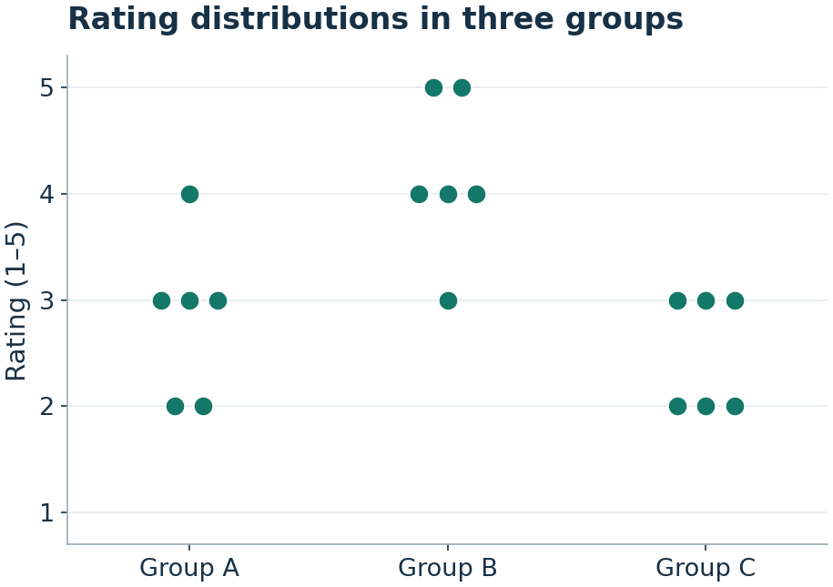
Each dot represents a rating on a five-point scale. Group B has more high ratings than groups A and C. Repeated values at the same level show why the rank statistic needs a tie correction.
Reading the result
“The independent groups differed in their rank distributions, tie-corrected H(2) = 9.39, asymptotic p = .0091. Five of six learners in B rated the task 4 or 5, compared with one in A and none in C.” In this small example, qualify the asymptotic inference.
A higher rating can mean more difficult or more useful depending on the item. Quote or paraphrase that item before interpreting which format teachers should revisit. Do not describe group B as achieving higher learning outcomes when the participants only judged task difficulty.
What to report
Show group distributions, sample sizes, H, degrees of freedom and p-value. Use multiplicity-adjusted pairwise tests to locate differences.
The ordering suggests relatively high ratings in B. Use adjusted pairwise evidence to identify particular differences. Avoid labeling all three groups different.
Compare mean scores across occasions while accounting for multiple observations from each learner.
The time effect asks whether at least one occasion mean differs. A learner who scores highly throughout supplies evidence about their own pattern of change. Mean growth and individual growth are distinct: two learners can have the same endline result after taking quite different paths from baseline.
Methodological sources (Laerd Statistics, n.d.; The Pennsylvania State University, n.d.).
When to Use It
Do the same learners’ average scores change across three checkpoints?
Data needed
A learner ID and a numeric score at every planned occasion. Identify comparable assessments, their order and any missing scores.
When another treatment fits
A Greenhouse–Geisser correction can address a sphericity violation. Consider Friedman for a rank-based question with complete repeated observations, or a mixed-effects model for incomplete follow-up under appropriate assumptions.
Assumptions
Matching and independence
Every learner supplies a sequence of observations. The method uses these sequences to estimate how precisely the average pattern is known. Different learners are ordinarily treated as independent.
How to check. Match records by stable identifier. Look for duplicated rows, shared group scores or an intervention assigned to whole classes. A printed table of separate class means cannot reveal individual changes.
If the condition is weak. Resolve mistaken matches. For class assignments or team scores, analyze data at the appropriate level. Many learner records in a single class still provide only one class-level implementation.
Comparable numeric scale
A one-point difference needs a sufficiently similar meaning over time. Changing the scoring rubric, assessment difficulty or maximum score can produce what looks like a time effect.
How to check. Check assessment specifications, scoring and administration at all checkpoints. Examine floor or ceiling concentrations. Two forms with identical maximum scores can still differ greatly in difficulty.
If the condition is weak. Use comparable or equated assessments. Where forms assessed different competencies, describe the outcomes separately. For a common short ordered rating scale consider a method that compares within-learner ranks.
Distribution and influence
Conventional inference assumes approximately normal within-learner errors for comparisons over time. A learner with one extremely large gain can dominate an average change in a small sample.
How to check. Draw individual trajectories and inspect distributions of the pairwise changes and fitted residuals. With six learners a large normality-test p-value cannot establish that the population distribution is normal.
If the condition is weak. Check original records for transcription errors. Retain genuine extreme changes and explain sensitivity to them. If strong skew is intrinsic to the scale and ranks answer the question, consider a repeated rank comparison.
Sphericity
When there are three or more occasions, the uncorrected univariate F test assumes equal population variances of all pairwise differences. Equal variability of the raw scores at each occasion is insufficient.
How to check. Calculate the three sets of changes and compare their variances. Inspect Mauchly’s test and the Greenhouse–Geisser epsilon estimate when supplied. Small samples make the formal diagnostic weak.
If the condition is weak. Use a prespecified correction such as Greenhouse–Geisser and report the resulting degrees of freedom. This adjusts the reference distribution for F. It cannot remedy mistakes in matching or differences in assessment content.
Coverage across occasions
Conventional repeated-measures ANOVA uses complete trajectories. Missing follow-up creates particular difficulty if learners who struggled more were more likely to miss the final assessment.
How to check. Count learners at each checkpoint and in the final matched set. Compare the initial scores and attendance of completers and those missing follow-up where records allow.
If the condition is weak. Report missingness and restrict conclusions about completers. A longitudinal mixed model can sometimes use partial records under stated assumptions. Entering zero for an absent learner would manufacture an apparent decline.
Interpreting Results
Worked school example
Six learners have baseline/midline/endline scores of (10,11,13), (13,14,15), (12,12,13), (11,13,14), (14,14,15) and (10,12,13). Means are 11.67, 12.67 and 13.83. The illustrative uncorrected omnibus result is F(2,10) = 21.90, p = .00022, conditional on sphericity.
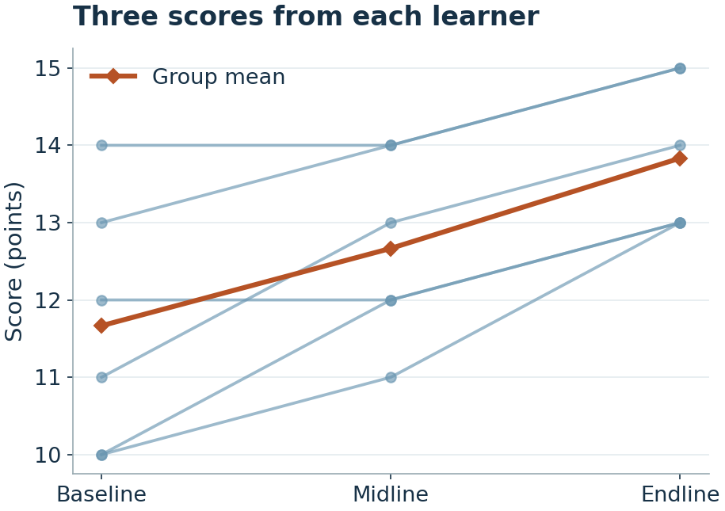
Lines connect each learner’s three scores in points. The orange line marks means of 11.67, 12.67 and 13.83. Some learners have identical or overlapping segments.
Reading the result
With a Greenhouse–Geisser correction for sphericity, the same data give F(1.27, 6.36) = 21.90, p = .0022. The conclusion about differences among the three occasions holds under this correction.
Describe the occasion means and tell readers the corrected omnibus test supports a difference among occasions. To investigate the interval in which growth occurred, report a planned within-learner contrast with its estimate in score points and uncertainty. Adjust for additional comparisons when appropriate. Repeated exposure to the assessment, other teaching and ordinary maturation could all contribute to differences associated with time.
What to report
Give the number measured at each occasion and included in analysis, occasion means, F, degrees of freedom, any correction, p-value and adjusted follow-up comparisons.
The omnibus result supports a difference across occasions under the model. It does not show that every interval produced an increase or that instruction caused it.
Compare three or more related conditions by ranking each learner’s responses within that learner. The comparisons preserve the repeated-measures design.
Learners may use the same five-point scale differently. Someone who uses only 2 and 3 can still reveal a consistent ordering alongside a peer who uses 4 and 5. Ranking within each learner focuses the analysis on that ordering. A difference in mean ranks does not quantify a difference in rating points.
Do the same learners rank three activities differently?
Data needed
A complete rating for every learner-condition combination, with the same ordered response scale throughout.
When another treatment fits
For comparable numeric scores and a question about means, consider repeated-measures ANOVA. With only two conditions, consider a paired test.
Assumptions
Complete learner blocks
Each learner supplies a set of responses, one under every condition. A comparison of ranks within a learner requires all three responses for the planned test.
How to check. Count duplicate learner–activity combinations and tabulate missing ratings by activity. Check whether a learner who missed one activity was assigned the lowest rating in its place.
If the condition is weak. Correct duplicates, distinguish absence from a low rating and state how many complete learners remain. Substantial or patterned missingness may call for a repeated ordinal model or a revised question.
Common ordered outcome
Every response must support the same ordering across conditions. Numeric codes standing for unrelated response categories cannot be ranked meaningfully.
How to check. Read each response anchor. Check whether high means greater clarity for every activity, including reverse-worded items. Compare whether learners interpreted the prompts similarly.
If the condition is weak. Recode reversed items using a documented rule. If categories describe different reasons for liking an activity, analyze those categories as labels or text instead.
Independent learners and order effects
Comparisons occur within learners, but evidence is accumulated across independent learners. A shared team rating repeated under several names does not add independent information.
How to check. Ask who actually selected each rating. Check whether all learners performed activities A, B and C in that order and whether experience with A could improve performance on C.
If the condition is weak. Use the actual rating unit. Vary activity order when planning a condition comparison. For existing fixed-order data, distinguish a difference among occasions from an effect attributable to activity.
Ties and restricted scale
Equal ratings indicate no rank distinction for that learner. Many ties on a short scale reduce information about order and change the test statistic.
How to check. For each learner, note tied values and whether every condition received the same rating. Verify that the analysis uses average ranks and the tie correction.
If the condition is weak. Keep genuine ties. Present category counts alongside mean ranks so readers can see ceiling or floor effects. If every learner assigns the same rank to all conditions, the comparison contains no within-person ordering information.
Small-sample inference
The familiar chi-square reference distribution approximates the distribution of the rank statistic. Six learners provide a particularly small basis for this approximation.
How to check. Read the output label for asymptotic, exact or simulated inference. For permutations, consider whether the condition labels could legitimately be exchanged within each learner under the null.
If the condition is weak. Choose a procedure that respects the repeated structure. If an order effect makes label exchangeability implausible, avoid attaching an exact permutation interpretation to the design. Discuss the observed rankings and the limitation.
Interpreting Results
Worked school example
Six learners rated activities A, B and C. Their triples are (2,3,4), (3,4,5), (2,3,3), (3,2,4), (3,4,4) and (2,3,4). The tie-corrected statistic is 9.09 on 2 degrees of freedom. C was highest or tied for highest for all six.
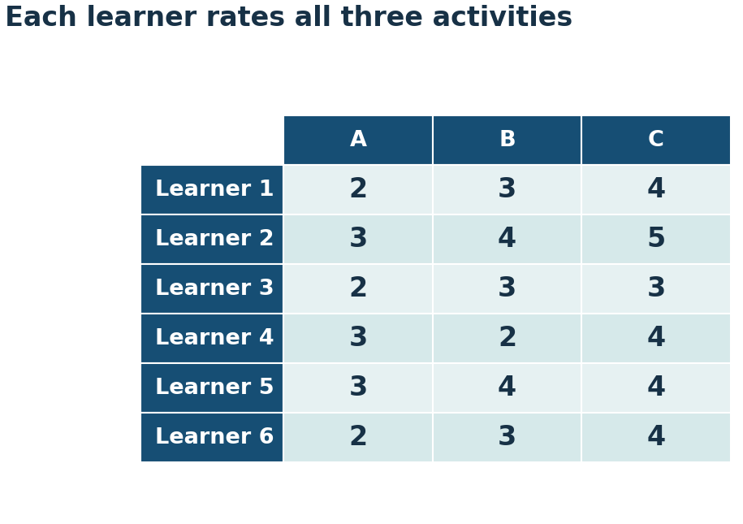
Rows show paired ratings on a five-point scale from six learners. Every learner rated C highest or tied for highest. Comparisons are made within each row.
Reading the result
The mean ranks for A, B and C were 1.17, 2.00 and 2.83. If activity labels are exchangeable within learners, the exact permutation p-value is .0062. Follow-up comparisons are needed to identify which activities differ.
A report could describe C as having the highest mean rank in this group, with six complete learners and a tie-corrected Friedman statistic of 9.09. The omnibus comparison addresses the set of activities. If a specific A–C contrast matters for a decision, present the learner-level paired responses and a suitable multiplicity-adjusted paired comparison. Do not call the sample rank difference an average learning gain.
What to report
Show the distribution for each activity, number of complete sets, Friedman statistic, degrees of freedom and p-value. Adjust follow-up tests for multiple comparisons.
Interpret differences in within-learner ordering. State how ties and small-sample inference were handled. Consistent activity order can confound a condition with fatigue or practice.
Friedman, M. (1937). The use of ranks to avoid the assumption of normality implicit in the analysis of variance. Journal of the American Statistical Association, 32(200), 675–701. https://doi.org/10.1080/01621459.1937.10503522
Assess whether the category distribution of one variable depends on the category of another. Compare observed cell counts with counts expected under independence.
Begin by deciding which percentage answers the question. A school asking about submission among learners with access needs a denominator of all learners with access. A school asking which learners made up the submissions would need a different denominator even though the same count table could serve both questions.
One record per independent learner with two mutually exclusive categorical responses. Use counts with known denominators.
When another treatment fits
For a sparse two-by-two table, consider Fisher’s exact test. For two measurements of the same learners with a yes/no outcome, consider McNemar’s test.
Assumptions
Counting unit and independence
The table counts independent observational units. Repeated weekly submissions by one learner or the same group submission duplicated for every member produce dependent records.
How to check. Trace the unit used in each row of the underlying file. Check duplicate identifiers and whether learners are nested within a small number of classes with substantially different policies.
If the condition is weak. Decide on one clearly defined observation per learner, such as submission by a specified date. For repeated or clustered data, use an analysis that accounts for that structure and identify the level at which access was assigned.
Mutually exclusive categories
Each learner needs exactly one recorded level of access and one recorded submission status for the period. Otherwise the row and column totals do not represent distinct learners.
How to check. Review definitions such as “has printed materials” and distinguish receiving school-issued copies from sharing a copy later. Check that a missing submission record means what the study defines as non-submission.
If the condition is weak. Resolve conflicting records using documented coding rules. Retain a count of unknowns and describe exclusions. Changing the definition after seeing the differences can change both the table and its interpretation.
Expected frequencies
The usual p-value uses a large-sample approximation. The relevant quantities are the expected cell counts under independence, which depend on both sets of margins.
How to check. Use row total × column total ÷ grand total for every cell. A common conservative check in a two-by-two table is that each expected count is at least five. An observed count below five does not by itself settle this check.
If the condition is weak. For a sparse two-by-two table, consider Fisher’s exact test and report its version. For larger sparse tables use an appropriate exact or simulated procedure. Combine categories only when there is a defensible substantive reason.
Sampling and attribution
An association can describe a cohort even when selection or confounding limits its wider interpretation. Materials may have been prioritized for learners with different attendance or connectivity.
How to check. Document how participants entered the table, when access was determined and whether groups differ in factors that could affect submission. Verify the records cover the same opportunity to submit.
If the condition is weak. Limit the claim to the observed cohort and consider a justified stratified or adjusted analysis when those factors were measured. A significant test does not show that providing materials would produce the observed difference.
Interpreting Results
Worked school example
Among 20 learners with printed materials, 16 submitted and 4 did not. Without materials, 10 of 20 submitted. Expected counts are 13 and 7 in each row. The uncorrected Pearson test gives χ²(1) = 3.96, p = .0467, Cramér’s V = .31.
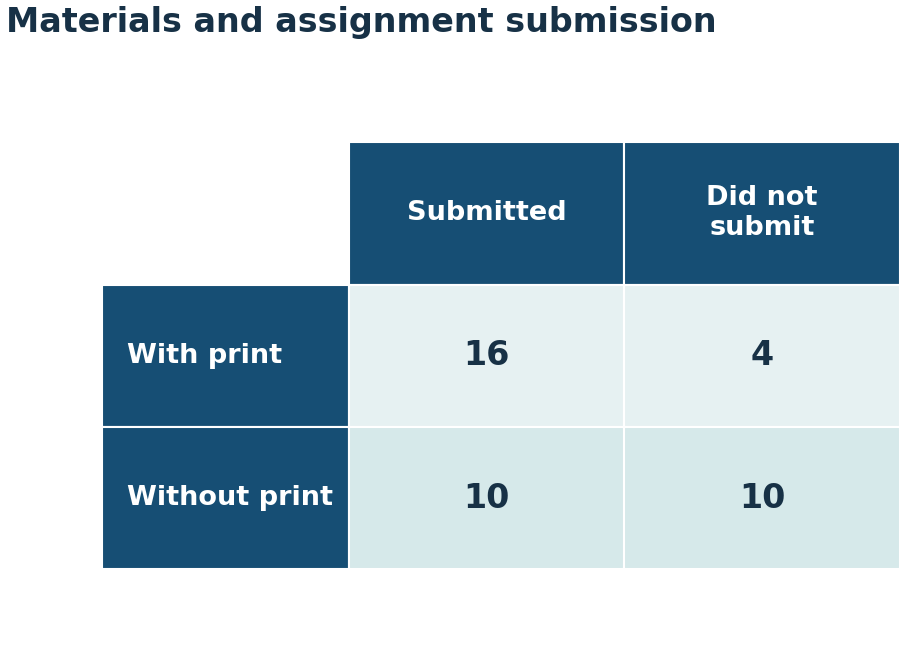
Observed counts of learners by material access and submission. Submission was 16 of 20 with print and 10 of 20 without. The rows describe independent groups.
Reading the result
Lead with the 16/20 versus 10/20 comparison and its 30-percentage-point difference. Then identify the uncorrected Pearson test used. Results close to a chosen significance threshold can differ across prespecified inference methods. Changing the correction solely to obtain a preferred conclusion undermines the analysis. In a report, explain how access and the submission deadline were recorded so other teachers can judge what this particular comparison means.
What to report
Show observed counts and clearly labeled row or column percentages. Give chi-square, degrees of freedom, p-value and an association measure such as Cramér’s V.
Submission was 80% versus 50%, a 30-percentage-point gap. Access was observed, so the gap may also reflect other differences between learners.
Compare two paired proportions with a binary outcome. The evidence comes from learners who switched in opposite directions.
Use this test when the question concerns change in a paired proportion. Two assessors classifying the same learner can also produce paired categories, but if the research question is agreement, report an agreement measure and the full cross-tabulation. Balanced marginal percentages can occur even when many classifications disagree.
Methodological sources (Fagerland et al., 2013; Laerd Statistics, n.d.).
When to Use It
Did the percentage meeting a benchmark change in the same group?
Data needed
A learner ID and two yes/no outcomes measured with the same benchmark at both occasions.
When another treatment fits
Use exact McNemar inference when few learners switch. For more than two matched checkpoints with binary outcomes, consider Cochran’s Q.
Assumptions
Two linked classifications
Every learner has exactly two binary classifications. Each test observation is a pair, and the learner must be identifiable across occasions. Knowing only the school-wide percentage twice cannot reconstruct the switches.
How to check. Match anonymized identifiers between assessments. Check duplicate records, transfers and learners present at only one occasion. Reconcile the four matched counts with the number of complete pairs.
If the condition is weak. Analyze the matched cohort and report the number excluded plus reasons. Two separate cohorts need an independent-groups analysis, while a design with three matched binary observations needs a method for more than two occasions.
Equivalent classification rule
A transition should reflect a change in recorded status on a common criterion. Altering the threshold or administering a materially easier endline assessment can create switches without equivalent skill change.
How to check. Check the benchmark, assessment forms, scoring and handling of borderline scores. Review whether learners with missing evidence were automatically classified below benchmark at one occasion.
If the condition is weak. Use a common defensible criterion when applying both classifications. Where scores are available, examine their magnitudes as a companion analysis. A change from 74 to 75 has a different practical meaning from a change from 40 to 90 despite identical status transitions.
Independence across pairs
The two observations for one learner are deliberately linked. The ordinary test treats one learner’s switching direction as independent of another learner’s direction.
How to check. Check whether pairs are individual records or whether one classroom judgment was assigned to everyone. If the study compares ratings by two teachers, identify whether systematic scoring differences could explain directional switching.
If the condition is weak. Analyze data at the unit producing the observation. For clustered paired outcomes, seek a model that accounts for both pairing and clustering. Discuss systematic changes in scoring before attributing changes to learning.
Discordant information and inference
Under the null of equal marginal proportions the expected numbers moving in the two directions are equal. Only the discordant pairs inform this test, even when most learners stay in one category.
How to check. Read the off-diagonal counts and their sum. In a cohort of hundreds, four changes still supply only four switching observations. Verify whether output uses an exact, mid-p or asymptotic method.
If the condition is weak. For few switches, a prespecified exact conditional test is transparent but may be conservative. Record the method used. If no learner changes, report the transition table and zero observed change rather than treating an absence of switching evidence as proof of population equivalence.
Interpreting Results
Worked school example
Among 25 matched learners, 10 remained below, 7 moved up, 2 moved down and 6 remained at benchmark. Baseline was 8/25 (32%); endline was 13/25 (52%). The change was +20 percentage points. With nine switches, exact two-sided p = .180.
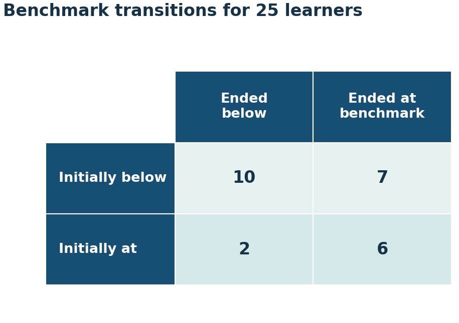
Counts of matched learners by baseline and endline status. Seven moved from below to at benchmark and two moved from at to below. These nine discordant pairs determine McNemar’s test.
Reading the result
Report both absolute percentages and the four transition counts. Explain that seven learners crossed upward while two crossed downward. Nine observed switches give limited precision, and a p-value above .05 does not establish equal performance. If giving a confidence interval for the change, choose a paired-proportion interval that uses the transition counts and specify the method.
What to report
Show all four paired counts, before and after percentages, percentage-point change, number of matched learners and the test version and p-value.
The sample percentage rose, while nine switches provide limited precision. A test for independent proportions would discard the learner matching.
Fagerland, M. W., Lydersen, S., & Laake, P. (2013). The McNemar test for binary matched-pairs data: Mid-p and asymptotic are better than exact conditional. BMC Medical Research Methodology, 13, Article 91. https://doi.org/10.1186/1471-2288-13-91
Measure the strength and direction of a linear relationship between two numeric variables. The coefficient ranges from −1 to +1.
A positive coefficient means that higher values on one measure tend to accompany higher values on the other. Its size depends on the score range and individual scatter. The coefficient does not supply a slope in score points. To predict comprehension scores, a prediction model and an assessment of prediction error would be needed.
Methodological sources (Laerd Statistics, n.d.; Schober et al., 2018).
When to Use It
Do two numeric measures have a linear relationship?
Data needed
A matched pair of numeric measures per learner, in known units, and one independent pair per learner.
When another treatment fits
Consider Spearman rank correlation when the trend consistently rises or falls but bends, or the variables are ordinal. A U-shaped pattern calls for a plot and a model suited to that shape.
Assumptions
Paired numeric scores with variation
Both numbers must describe the same learner on scales where numerical differences have a useful interpretation. The coefficient also requires nonzero variation in each measure.
How to check. Join assessment files by an individual identifier. Check scale units, ranges, dates and whether one test score is partly embedded in the other. Inspect both distributions for a constant score or severe floor or ceiling effects.
If the condition is weak. Repair mismatches and scoring errors from the original records. If one variable is constant the correlation is undefined. For ordered categories with few levels consider a rank association or show the joint distribution.
Linear trend
Pearson’s coefficient summarizes the direction and tightness of a straight-line pattern. A strong curved relationship can yield a small coefficient if the curve first rises and then falls.
How to check. Draw the paired scores as a scatterplot, include axis units and inspect the trend through the full observed range. Examine sensible group labels where different grades or forms might form separate clouds.
If the condition is weak. Report the observed shape. A monotonic curve may warrant a rank correlation. If the question concerns a relationship with a turning point, neither a single Pearson nor a single Spearman coefficient characterizes the whole curve.
Independent pairs and coverage
The inferential sample size is the number of independent learner pairs. Several attempts per learner or multiple learners sharing one group score violate this counting rule.
How to check. Check duplicates, multiple submissions and clustering by class. Compare the range of scores in the analyzed group with the range in the school population to which the report might refer.
If the condition is weak. Use a repeated or multilevel analysis where necessary. Selecting only struggling readers can restrict the score range and alter the correlation; describe that selection and limit generalization accordingly.
Influential pairs
A lone learner far from the remaining scores can dominate the direction and strength of the fitted association. A genuine unusual case may also challenge the proposed interpretation.
How to check. Inspect isolated points and records at either end of the scale. Calculate the coefficient with and without a flagged case as a sensitivity check, keeping the primary analysis and its sample definition clear.
If the condition is weak. Correct verified clerical errors. For a valid outlying case explain the influence and present both sensitivity and full-sample findings. A stronger coefficient after deletion is not a reason to remove a learner.
Distribution for conventional inference
Calculating the sample coefficient requires much less than attaching its usual small-sample p-value or Fisher confidence interval. Joint normality is a working model for conventional inference.
How to check. Inspect the cloud for strong asymmetry, widely changing spread and separate clusters. Looking at two separate histograms alone does not show the joint shape, especially with eight learners.
If the condition is weak. Keep a descriptive coefficient and plot when a defensible interval is unavailable. For an inferential alternative explain the sampling assumptions behind a selected resampling method; small samples remain imprecise.
Interpreting Results
Worked school example
For eight learners, vocabulary scores are 10, 12, 13, 15, 16, 18, 19, 20. Corresponding comprehension scores are 12, 11, 15, 14, 16, 19, 17, 20. Pearson r = .912, with an approximate Fisher 95% CI of .58 to .98.
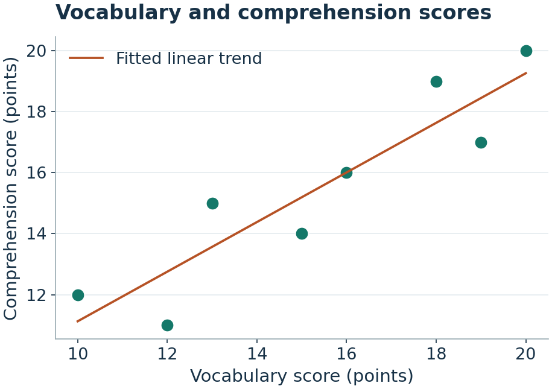
Each dot pairs two scores in points for one learner. The fitted line slopes upward, reflecting a strong positive linear association in these eight illustrative records.
Reading the result
A teacher might write that higher vocabulary scores generally accompanied higher comprehension scores in these eight learners, r = .91, with an approximate 95% interval of [.58, .98]. Mention the range of each test, inspect the plotted points and state how missing pairs were handled. A later instructional decision would need evidence addressing alternative explanations such as general reading proficiency.
What to report
Report the number of pairs, Pearson r, 95% confidence interval and direction. Describe the association in context and avoid causal claims.
Learners with higher vocabulary scores tended to score higher on comprehension in this sample. A coefficient of .912 is not a 91.2% increase in either score.
Schober, P., Boer, C., & Schwarte, L. A. (2018). Correlation coefficients: Appropriate use and interpretation. Anesthesia & Analgesia, 126(5), 1763–1768. https://doi.org/10.1213/ANE.0000000000002864
Spearman rank correlation
Overview
Describe a monotonic association: as one measure increases, the other tends to increase or tends to decrease. The relationship can bend while keeping the same direction.
Use this approach for a question about ordering, such as whether learners who rate an activity as more useful also tend to report greater confidence. Respondents do not need to use every rating category. Preserve each learner’s original response pair throughout data cleaning; independently sorting the two columns before matching them would manufacture perfect agreement.
Methodological sources (Laerd Statistics, n.d.; Schober et al., 2018).
When to Use It
Do higher rankings on one measure tend to accompany higher or lower rankings on another?
Data needed
Two ordered or numeric measures for each independent learner. Record what higher scores mean on each scale.
When another treatment fits
Kendall’s tau-b is another rank association measure that accounts for ties. If the relationship changes direction, show the plot and describe that pattern.
Assumptions
Meaningful rank order
Each variable must have at least an ordinal scale. A code of 1, 2 or 3 for three unrelated activities conveys no ranking by itself. The direction of the two scales determines the interpretation of the sign.
How to check. Read the wording of each anchor and any reverse-coded item. Check that “higher” means more of the named attribute, that both variables vary and that the two ratings belong to the same learner.
If the condition is weak. Reverse-code when the scale definition requires it and document that choice. For unordered categories use a categorical comparison. If all ratings coincide on one variable, no rank correlation can be estimated.
Monotonic pattern
The coefficient describes whether increasing ranks in one measure tend to accompany increasing or decreasing ranks in the other. A trend can bend while keeping its direction.
How to check. Plot all rating pairs, using the size of a point or a frequency grid to show overlapping learners. Look for a consistent direction, a U-shape, a ceiling, or separate sections with contrasting patterns.
If the condition is weak. For a changing direction show the shape and investigate the relevant groups or ranges. A near-zero rank correlation cannot justify saying that there is no relationship of any kind.
Handling ties
A five-category scale often gives several learners the same rank. With many ties, different learner patterns can map to the same coefficient, and shortcuts assuming unique ranks give incorrect results.
How to check. Count observations in each category. Sort the scores for each variable separately. Check that tied observations receive the average of the ranks they would otherwise occupy.
If the condition is weak. Use software or a spreadsheet routine that calculates average ranks and correlates those ranks. For an alternative summary with many ties consider Kendall’s tau-b, identifying which coefficient was used so readers can interpret its scale.
Independent pairs and exchangeability
Each learner contributes one independent pair. For a permutation test of independence, shuffling one set of responses across learners must be a valid rearrangement under the null hypothesis.
How to check. Verify that there is one matched record per learner. Check whether ratings were collected repeatedly, by teams or within classes that had very different experiences. A free shuffle across incompatible groups changes the design.
If the condition is weak. Use a design-respecting method such as a justified within-stratum permutation or a repeated-data analysis. Exact enumeration addresses the reference distribution; it cannot fix dependent observations or biased recruitment.
Interpreting Results
Worked school example
Usefulness ratings are 1, 2, 2, 3, 3, 4, 4, 5. Corresponding confidence ratings are 2, 1, 3, 2, 4, 4, 5, 5. Spearman rₛ = .827. Enumerating all 40,320 permutations and counting associations at least this strong in either direction gives p = .0167.
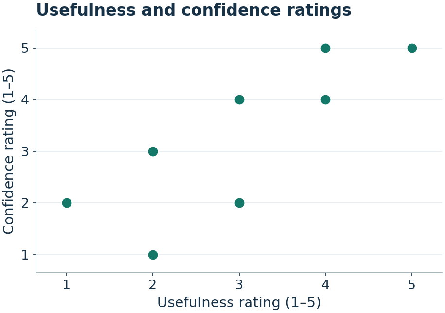
Each dot is a learner’s pair of five-point ratings. Higher usefulness tends to accompany higher confidence. Ties on each axis are assigned average ranks for Spearman correlation.
Reading the result
A teacher could report that learners assigning higher usefulness ratings generally ranked higher on confidence, rₛ = .83, n = 8, two-sided permutation p = .017. Display the scale anchors and joint counts so readers can see the ties. This result does not establish that a one-category increase in usefulness raises confidence by a predictable amount, or establish the direction of influence between two ratings collected together.
What to report
Provide the number of pairs, Spearman coefficient, direction and uncertainty or p-value. Explain what a higher score means for each variable.
Higher usefulness ratings tended to accompany higher confidence. The association describes ordering and supplies no evidence by itself about the causal direction.